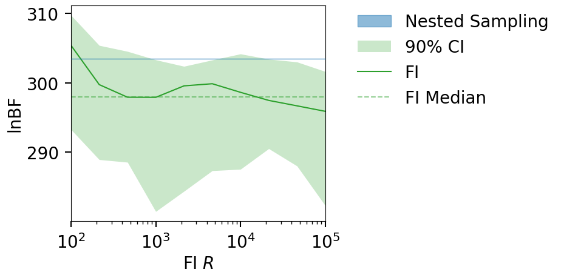
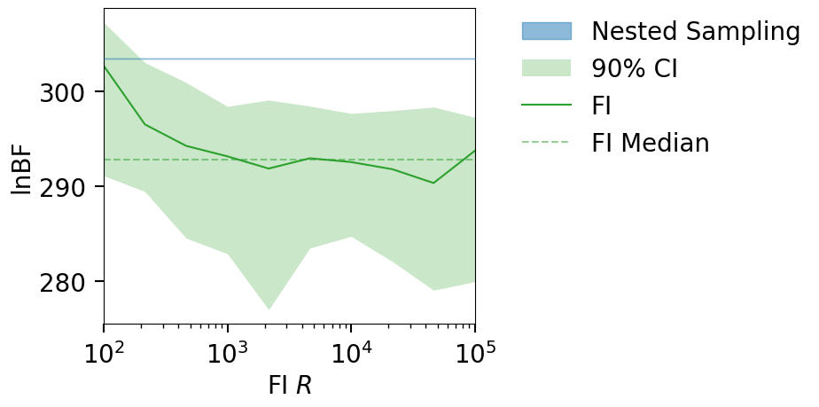
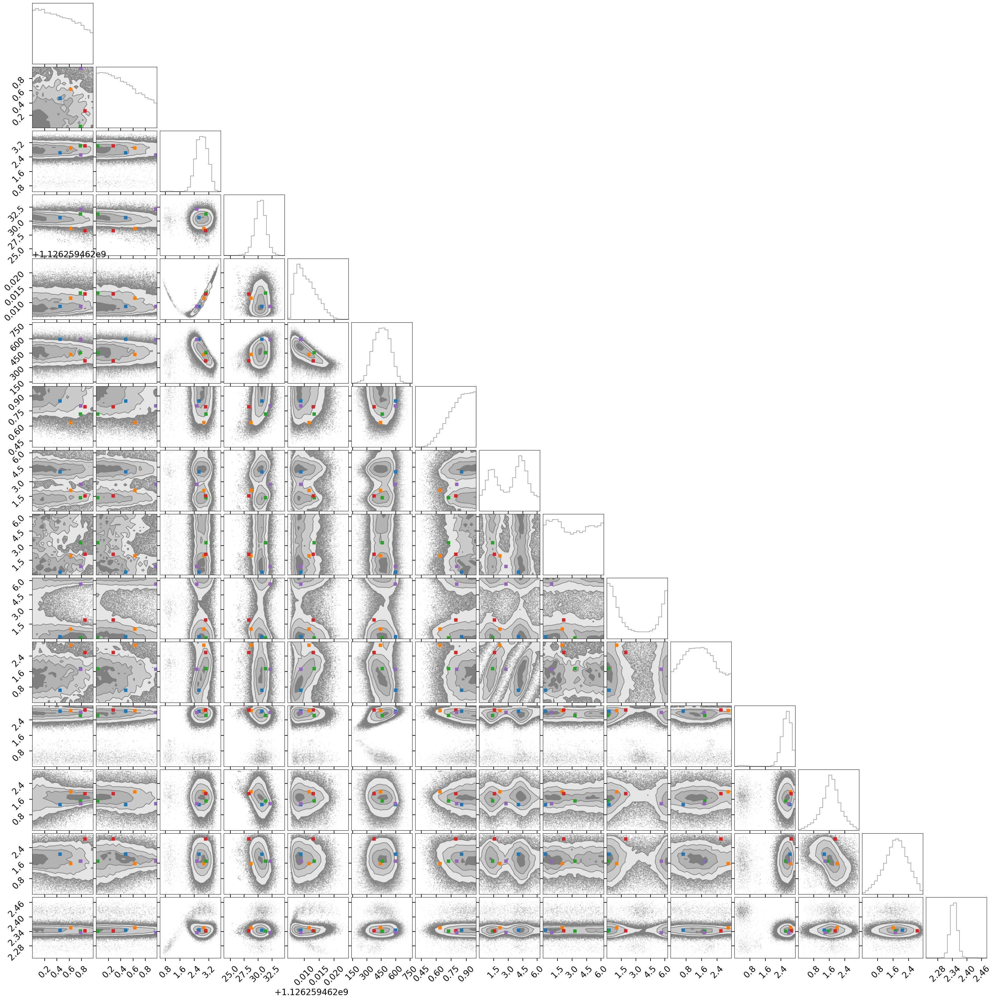
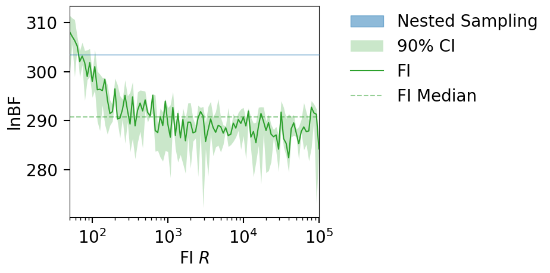
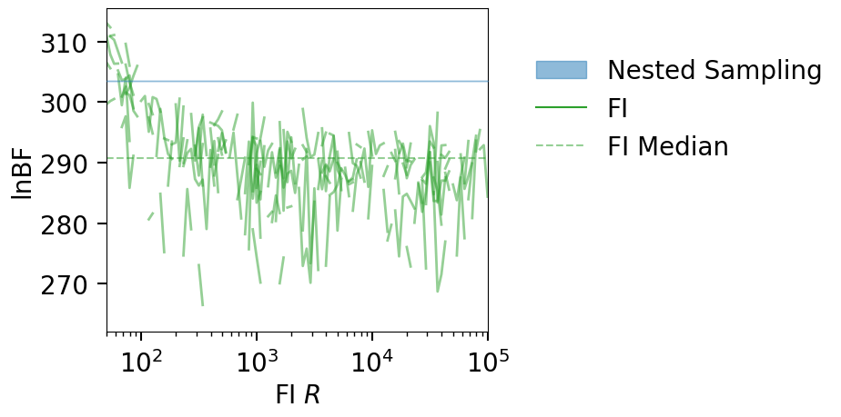

EX3: GW150914#
In this example we load an LVK posterior from zenodo and compute the FI evidence for the CBC model.
Download posteriors from zenodo
%load_ext autoreload
%autoreload 2
%matplotlib inline
import h5py
import numpy as np
import pandas as pd
from collections import namedtuple
from funnel.plotting import plot_fi_evidence_results
from funnel.fi_core import get_fi_lnz_list
import shutil, os
np.random.seed(42)
Load GW150914 posterior + Nested Sampling LnZ#
# load the LVK posterior
FPATH = 'IGWN-GWTC2p1-v2-GW150914_095045_PEDataRelease_mixed_cosmo.h5'
LVK_data = namedtuple("LVK_data", "posterior, lnz, lnz_err, lnBF")
def load_lvk_data(fpath):
with h5py.File(fpath, 'r') as f:
sampling_params = list(f['C01:IMRPhenomXPHM/priors/analytic'].keys())
# remove mass_1, mass_2 (as we already have chirp_mass, mass_ratio)
sampling_params = [p for p in sampling_params if p not in ['mass_1', 'mass_2', 'time_jitter']]
sampler_data = f['C01:IMRPhenomXPHM/meta_data/sampler']
lnz, lnz_err = sampler_data['ln_evidence'][0], sampler_data['ln_evidence_error'][0]
lnBF = sampler_data['ln_bayes_factor'][0]
post = f['C01:IMRPhenomXPHM']['posterior_samples'][()]
post = pd.DataFrame({name: post[name][:] for name in post.dtype.names})
post = post[sampling_params + ['log_likelihood', 'log_prior']]
# only keep parameters with more than one unique value (ie drop deltas)
post = post.loc[:, post.nunique() > 1]
return LVK_data(post, lnz, lnz_err, lnBF)
GW150914_data = load_lvk_data(FPATH)
# GW150914_data.posterior.columns WITHOUT log_likelihood and log_prior
sampling_params = set(list(GW150914_data.posterior.columns))-set(['log_likelihood', 'log_prior'])
cbc_params = []
print("CBC PARAMS:")
count = 0
for i in sorted(sampling_params):
if 'calib' not in i:
count += 1
print(count, ")", i)
cbc_params.append(i)
print("CALIB PARAMS:")
calib_params = []
count = 0
for i in sorted(sampling_params):
if 'calib' in i:
count += 1
print(count, ")", i)
calib_params.append(i)
CBC PARAMS:
1 ) a_1
2 ) a_2
3 ) azimuth
4 ) chirp_mass
5 ) geocent_time
6 ) luminosity_distance
7 ) mass_ratio
8 ) phase
9 ) phi_12
10 ) phi_jl
11 ) psi
12 ) theta_jn
13 ) tilt_1
14 ) tilt_2
15 ) zenith
CALIB PARAMS:
1 ) recalib_H1_amplitude_0
2 ) recalib_H1_amplitude_1
3 ) recalib_H1_amplitude_2
4 ) recalib_H1_amplitude_3
5 ) recalib_H1_amplitude_4
6 ) recalib_H1_amplitude_5
7 ) recalib_H1_amplitude_6
8 ) recalib_H1_amplitude_7
9 ) recalib_H1_amplitude_8
10 ) recalib_H1_amplitude_9
11 ) recalib_H1_phase_0
12 ) recalib_H1_phase_1
13 ) recalib_H1_phase_2
14 ) recalib_H1_phase_3
15 ) recalib_H1_phase_4
16 ) recalib_H1_phase_5
17 ) recalib_H1_phase_6
18 ) recalib_H1_phase_7
19 ) recalib_H1_phase_8
20 ) recalib_H1_phase_9
21 ) recalib_L1_amplitude_0
22 ) recalib_L1_amplitude_1
23 ) recalib_L1_amplitude_2
24 ) recalib_L1_amplitude_3
25 ) recalib_L1_amplitude_4
26 ) recalib_L1_amplitude_5
27 ) recalib_L1_amplitude_6
28 ) recalib_L1_amplitude_7
29 ) recalib_L1_amplitude_8
30 ) recalib_L1_amplitude_9
31 ) recalib_L1_phase_0
32 ) recalib_L1_phase_1
33 ) recalib_L1_phase_2
34 ) recalib_L1_phase_3
35 ) recalib_L1_phase_4
36 ) recalib_L1_phase_5
37 ) recalib_L1_phase_6
38 ) recalib_L1_phase_7
39 ) recalib_L1_phase_8
40 ) recalib_L1_phase_9
data = h5py.File(FPATH, 'r')
count = 0
for k,v in data['C01:IMRPhenomXPHM/priors/analytic'].items():
if "DeltaFunction" not in str(v[()]):
count += 1
print(f"{count:2d}) {k}")
else:
print(f"SKIP) {k}")#: {v[()]}")
data.close()
1) a_1
2) a_2
3) azimuth
4) chirp_mass
5) geocent_time
6) luminosity_distance
7) mass_1
8) mass_2
9) mass_ratio
10) phase
11) phi_12
12) phi_jl
13) psi
14) recalib_H1_amplitude_0
15) recalib_H1_amplitude_1
16) recalib_H1_amplitude_2
17) recalib_H1_amplitude_3
18) recalib_H1_amplitude_4
19) recalib_H1_amplitude_5
20) recalib_H1_amplitude_6
21) recalib_H1_amplitude_7
22) recalib_H1_amplitude_8
23) recalib_H1_amplitude_9
SKIP) recalib_H1_frequency_0
SKIP) recalib_H1_frequency_1
SKIP) recalib_H1_frequency_2
SKIP) recalib_H1_frequency_3
SKIP) recalib_H1_frequency_4
SKIP) recalib_H1_frequency_5
SKIP) recalib_H1_frequency_6
SKIP) recalib_H1_frequency_7
SKIP) recalib_H1_frequency_8
SKIP) recalib_H1_frequency_9
24) recalib_H1_phase_0
25) recalib_H1_phase_1
26) recalib_H1_phase_2
27) recalib_H1_phase_3
28) recalib_H1_phase_4
29) recalib_H1_phase_5
30) recalib_H1_phase_6
31) recalib_H1_phase_7
32) recalib_H1_phase_8
33) recalib_H1_phase_9
34) recalib_L1_amplitude_0
35) recalib_L1_amplitude_1
36) recalib_L1_amplitude_2
37) recalib_L1_amplitude_3
38) recalib_L1_amplitude_4
39) recalib_L1_amplitude_5
40) recalib_L1_amplitude_6
41) recalib_L1_amplitude_7
42) recalib_L1_amplitude_8
43) recalib_L1_amplitude_9
SKIP) recalib_L1_frequency_0
SKIP) recalib_L1_frequency_1
SKIP) recalib_L1_frequency_2
SKIP) recalib_L1_frequency_3
SKIP) recalib_L1_frequency_4
SKIP) recalib_L1_frequency_5
SKIP) recalib_L1_frequency_6
SKIP) recalib_L1_frequency_7
SKIP) recalib_L1_frequency_8
SKIP) recalib_L1_frequency_9
44) recalib_L1_phase_0
45) recalib_L1_phase_1
46) recalib_L1_phase_2
47) recalib_L1_phase_3
48) recalib_L1_phase_4
49) recalib_L1_phase_5
50) recalib_L1_phase_6
51) recalib_L1_phase_7
52) recalib_L1_phase_8
53) recalib_L1_phase_9
54) theta_jn
55) tilt_1
56) tilt_2
57) time_jitter
58) zenith
sampling_params # remove geocent_time
sampling_params.remove('geocent_time')
sampling_params
{'a_1',
'a_2',
'azimuth',
'chirp_mass',
'luminosity_distance',
'mass_ratio',
'phase',
'phi_12',
'phi_jl',
'psi',
'recalib_H1_amplitude_0',
'recalib_H1_amplitude_1',
'recalib_H1_amplitude_2',
'recalib_H1_amplitude_3',
'recalib_H1_amplitude_4',
'recalib_H1_amplitude_5',
'recalib_H1_amplitude_6',
'recalib_H1_amplitude_7',
'recalib_H1_amplitude_8',
'recalib_H1_amplitude_9',
'recalib_H1_phase_0',
'recalib_H1_phase_1',
'recalib_H1_phase_2',
'recalib_H1_phase_3',
'recalib_H1_phase_4',
'recalib_H1_phase_5',
'recalib_H1_phase_6',
'recalib_H1_phase_7',
'recalib_H1_phase_8',
'recalib_H1_phase_9',
'recalib_L1_amplitude_0',
'recalib_L1_amplitude_1',
'recalib_L1_amplitude_2',
'recalib_L1_amplitude_3',
'recalib_L1_amplitude_4',
'recalib_L1_amplitude_5',
'recalib_L1_amplitude_6',
'recalib_L1_amplitude_7',
'recalib_L1_amplitude_8',
'recalib_L1_amplitude_9',
'recalib_L1_phase_0',
'recalib_L1_phase_1',
'recalib_L1_phase_2',
'recalib_L1_phase_3',
'recalib_L1_phase_4',
'recalib_L1_phase_5',
'recalib_L1_phase_6',
'recalib_L1_phase_7',
'recalib_L1_phase_8',
'recalib_L1_phase_9',
'theta_jn',
'tilt_1',
'tilt_2',
'zenith'}
print(f"Posterior shape: {GW150914_data.posterior.shape}")
print(f"LnZ: {GW150914_data.lnz:.2f} +/- {GW150914_data.lnz_err:.2f}")
print(f"LnBF: {GW150914_data.lnBF}")
GW150914_data.posterior.head().T
Posterior shape: (147634, 57)
LnZ: -6984.67 +/- 0.14
LnBF: 303.45
| 0 | 1 | 2 | 3 | 4 | |
|---|---|---|---|---|---|
| a_1 | 9.242101e-01 | 6.473688e-01 | 2.056780e-01 | 7.112512e-01 | 2.506404e-01 |
| a_2 | 3.310924e-01 | 3.133050e-01 | 8.750084e-01 | 4.800071e-03 | 2.271518e-01 |
| azimuth | 3.278707e+00 | 2.602855e+00 | 2.715020e+00 | 2.380721e+00 | 2.783846e+00 |
| chirp_mass | 2.918072e+01 | 2.995305e+01 | 3.143389e+01 | 3.074103e+01 | 3.127060e+01 |
| geocent_time | 1.126259e+09 | 1.126259e+09 | 1.126259e+09 | 1.126259e+09 | 1.126259e+09 |
| luminosity_distance | 3.237332e+02 | 5.109554e+02 | 5.009286e+02 | 5.780114e+02 | 5.871190e+02 |
| mass_ratio | 7.879585e-01 | 8.641748e-01 | 8.520294e-01 | 9.803410e-01 | 9.301303e-01 |
| phase | 3.840744e+00 | 4.337254e+00 | 1.757881e+00 | 4.723087e+00 | 5.542601e+00 |
| phi_12 | 5.394340e+00 | 3.868170e+00 | 2.916934e+00 | 4.591901e+00 | 6.435515e-01 |
| phi_jl | 1.210051e+00 | 2.486261e-02 | 5.576937e+00 | 9.338661e-01 | 6.019726e+00 |
| psi | 1.800080e+00 | 7.571376e-01 | 1.272124e+00 | 8.861790e-01 | 2.418739e+00 |
| recalib_H1_amplitude_0 | 2.999532e-02 | -5.472740e-03 | 6.900000e-03 | 6.081133e-03 | 4.977923e-03 |
| recalib_H1_amplitude_1 | -3.383615e-02 | -5.474793e-02 | 1.200648e-02 | -4.799967e-02 | 6.687969e-03 |
| recalib_H1_amplitude_2 | -1.688680e-02 | 2.209578e-02 | 6.758393e-02 | 1.357331e-02 | 2.604320e-02 |
| recalib_H1_amplitude_3 | 1.698306e-02 | 3.626471e-02 | -1.131780e-02 | -1.152776e-02 | -4.927244e-02 |
| recalib_H1_amplitude_4 | -3.305150e-02 | 1.121430e-02 | 5.399314e-03 | 2.998931e-03 | -1.089422e-02 |
| recalib_H1_amplitude_5 | 7.041142e-03 | -1.582923e-02 | -1.287890e-02 | -1.776959e-03 | -1.428993e-02 |
| recalib_H1_amplitude_6 | 6.394128e-04 | 8.274103e-03 | -1.444985e-02 | -1.033461e-02 | -5.928833e-03 |
| recalib_H1_amplitude_7 | -1.628103e-02 | 1.094559e-02 | -1.589106e-02 | -7.269532e-04 | -1.055759e-02 |
| recalib_H1_amplitude_8 | -1.309187e-02 | -2.280925e-03 | 4.110290e-03 | -9.604852e-03 | 3.810975e-03 |
| recalib_H1_amplitude_9 | 3.221316e-02 | -1.607438e-02 | 2.675564e-02 | 1.992964e-03 | 7.210042e-03 |
| recalib_H1_phase_0 | -2.719320e-02 | -4.060107e-02 | -7.166049e-03 | 6.323885e-03 | -1.256244e-01 |
| recalib_H1_phase_1 | -1.345580e-02 | 5.485112e-02 | -6.924302e-02 | 8.663208e-02 | -2.985714e-02 |
| recalib_H1_phase_2 | 7.148825e-02 | 9.037495e-03 | -2.528264e-02 | 3.690566e-02 | -1.084741e-03 |
| recalib_H1_phase_3 | 5.833606e-02 | -1.235240e-04 | 4.403403e-02 | 1.949062e-03 | -4.622115e-02 |
| recalib_H1_phase_4 | -1.974057e-02 | 4.740506e-02 | 2.063412e-02 | -3.390864e-02 | 2.773227e-02 |
| recalib_H1_phase_5 | -4.427238e-03 | -4.936114e-03 | -4.498003e-04 | -2.420854e-02 | -2.673151e-02 |
| recalib_H1_phase_6 | 2.205619e-02 | -1.312319e-02 | -3.284825e-02 | 3.316393e-03 | -8.395785e-04 |
| recalib_H1_phase_7 | 1.259316e-03 | -1.696564e-02 | -1.007685e-02 | -3.100947e-02 | 2.684205e-03 |
| recalib_H1_phase_8 | 1.409629e-02 | 9.934225e-03 | -6.075666e-03 | 2.741046e-02 | 1.409607e-03 |
| recalib_H1_phase_9 | 7.438222e-03 | 1.741232e-02 | -1.067432e-02 | -1.260970e-02 | 4.605238e-03 |
| recalib_L1_amplitude_0 | -1.149459e-01 | -1.533687e-01 | 5.256302e-02 | -4.926279e-03 | 2.115813e-01 |
| recalib_L1_amplitude_1 | -4.511059e-02 | -4.943587e-02 | 9.095780e-02 | 3.852026e-03 | -1.819107e-01 |
| recalib_L1_amplitude_2 | -7.530716e-02 | 8.390149e-02 | -4.031972e-02 | -1.972729e-02 | 6.843934e-02 |
| recalib_L1_amplitude_3 | -4.488562e-02 | 4.857405e-02 | 1.939737e-02 | -3.916733e-05 | 1.209214e-01 |
| recalib_L1_amplitude_4 | -4.366417e-02 | -3.900651e-02 | -5.958842e-02 | -7.124533e-02 | 5.328298e-02 |
| recalib_L1_amplitude_5 | 3.566428e-02 | -4.372492e-02 | 5.438995e-02 | 2.581318e-02 | -7.917951e-03 |
| recalib_L1_amplitude_6 | -3.862231e-03 | -2.591929e-02 | -4.370625e-02 | 2.947175e-03 | -3.395698e-02 |
| recalib_L1_amplitude_7 | -5.773761e-03 | -4.311472e-03 | 4.900587e-03 | -1.826212e-02 | -1.684315e-02 |
| recalib_L1_amplitude_8 | 9.266035e-04 | -1.677954e-02 | -3.511803e-02 | -6.485830e-03 | -2.241593e-02 |
| recalib_L1_amplitude_9 | 1.614393e-02 | -2.712452e-02 | 1.511530e-02 | 3.721168e-03 | -3.419746e-02 |
| recalib_L1_phase_0 | 2.737868e-02 | -4.073929e-03 | 6.091229e-02 | -2.545232e-02 | -1.465972e-01 |
| recalib_L1_phase_1 | 5.689561e-02 | -1.122678e-02 | 5.452316e-02 | -1.197389e-02 | -1.613542e-01 |
| recalib_L1_phase_2 | -3.519969e-03 | -8.114218e-02 | -3.653476e-02 | -5.637367e-02 | -6.982944e-02 |
| recalib_L1_phase_3 | -6.189141e-02 | 2.536081e-02 | -1.243102e-01 | 7.364353e-02 | -2.765010e-02 |
| recalib_L1_phase_4 | 4.976252e-02 | -4.251552e-02 | -1.996706e-02 | -3.091622e-02 | 6.611963e-02 |
| recalib_L1_phase_5 | 2.161828e-02 | -3.238076e-02 | 9.706364e-03 | -5.364514e-02 | -5.986921e-03 |
| recalib_L1_phase_6 | -3.086198e-04 | 6.332725e-03 | -2.956626e-03 | -1.210257e-02 | -5.876330e-03 |
| recalib_L1_phase_7 | 7.216118e-03 | -3.571173e-03 | 2.202440e-03 | -9.887829e-03 | 9.418501e-04 |
| recalib_L1_phase_8 | -8.043966e-03 | 1.301929e-03 | 5.764206e-03 | 5.924480e-03 | -1.411924e-02 |
| recalib_L1_phase_9 | 1.215333e-02 | -7.934553e-03 | -2.742098e-03 | 1.089411e-02 | 1.026025e-02 |
| theta_jn | 2.775318e+00 | 2.660558e+00 | 2.493798e+00 | 2.967835e+00 | 3.074509e+00 |
| tilt_1 | 1.913304e+00 | 1.841044e+00 | 2.365895e+00 | 1.672429e+00 | 1.373358e+00 |
| tilt_2 | 1.676054e+00 | 1.839976e+00 | 1.369656e+00 | 6.271606e-01 | 1.525285e+00 |
| zenith | 2.326161e+00 | 2.334247e+00 | 2.345314e+00 | 2.369513e+00 | 2.339495e+00 |
| log_likelihood | 3.223043e+02 | 3.203015e+02 | 3.206540e+02 | 3.242657e+02 | 3.227294e+02 |
| log_prior | 7.693796e+01 | 7.862083e+01 | 7.603158e+01 | 8.132604e+01 | 6.226660e+01 |
NOTE: the log-likelihood column is actually the lnl-noise Lnl (the log-likelihood-ratio).
Compute FI LnZ#
Using a downsampled posterior sample for speed#
OUTDIR = 'out_GW150914_downsampled'
CLEAN = True
if os.path.exists(OUTDIR) and CLEAN:
shutil.rmtree(OUTDIR)
os.makedirs(OUTDIR, exist_ok=True)
# USING DOWNSAMPLED POSTERIOR SAMPLES
N_SAMP = 10000
N_REF_POINTS = 100
post = GW150914_data.posterior.sample(N_SAMP, weights=np.exp(GW150914_data.posterior.log_likelihood))
post = post[list(sampling_params) + ['log_likelihood', 'log_prior']]
print(f"Using {100*(len(post)/len(GW150914_data.posterior)):.2f}% of posterior samples, and trying out {N_REF_POINTS} reference points.")
lnzs, r_vals, _ = get_fi_lnz_list(
post,
num_ref_params=N_REF_POINTS,
r_vals=np.geomspace(1e2, 1e5, 10),
cache_fn=f'{OUTDIR}/lnzs.npz',
weight_samples_by_lnl=True,
)
|funnel|INFO| Calculating FI LnZ with 100 reference points and a posterior of size: (10000, 54)
Using 6.77% of posterior samples, and trying out 100 reference points.
plt_kwgs = dict(lnzs=lnzs, r_vals=r_vals,sampling_lnz=[GW150914_data.lnBF])
fig = plot_fi_evidence_results(**plt_kwgs)
fig.gca().set_ylabel("lnBF");

# OLD
plt_kwgs = dict(lnzs=lnzs, r_vals=r_vals,sampling_lnz=[GW150914_data.lnBF])
fig = plot_fi_evidence_results(**plt_kwgs)
fig.gca().set_ylabel("lnBF");

OUTDIR = 'out_GW150914_downsampled_no_calib'
CLEAN = True
if os.path.exists(OUTDIR) and CLEAN:
shutil.rmtree(OUTDIR)
os.makedirs(OUTDIR, exist_ok=True)
# USING DOWNSAMPLED POSTERIOR SAMPLES
N_SAMP = 10000
N_REF_POINTS = 10
weights = GW150914_data.posterior.log_likelihood - GW150914_data.posterior.log_likelihood.max()
weights = np.exp(weights)
post = GW150914_data.posterior.sample(N_SAMP, weights=weights)
print(f"Using {100*(len(post)/len(GW150914_data.posterior)):.2f}% of posterior samples, and trying out {N_REF_POINTS} reference points.")
# post = post.drop(columns=calib_params)
lnzs, r_vals, fi_samps = get_fi_lnz_list(
post,
num_ref_params=N_REF_POINTS,
r_vals=np.geomspace(1e2, 1e5, 10),
cache_fn=f'{OUTDIR}/lnzs.npz',
weight_samples_by_lnl=True,
)
plt_kwgs = dict(lnzs=lnzs, r_vals=r_vals,sampling_lnz=[GW150914_data.lnBF])
fig = plot_fi_evidence_results(**plt_kwgs, plot_all_lnzs=False, plt_kwgs=dict(alpha=.1))
fig.gca().set_ylabel("lnBF");
|funnel|INFO| Calculating FI LnZ with 10 reference points and a posterior of size: (10000, 55)
Using 6.77% of posterior samples, and trying out 10 reference points.
from funnel.plotting import plot_corner_and_mark_samples
p = GW150914_data.posterior
weights = p.log_likelihood - p.log_likelihood.max()
weights = np.exp(weights)
samp = p.sample(5, weights=weights)
p = p[cbc_params]
fi_samps = samp[cbc_params].values
fig = plot_corner_and_mark_samples(p, fi_samps)

sampling_params
{'a_1',
'a_2',
'azimuth',
'chirp_mass',
'geocent_time',
'luminosity_distance',
'mass_ratio',
'phase',
'phi_12',
'phi_jl',
'psi',
'recalib_H1_amplitude_0',
'recalib_H1_amplitude_1',
'recalib_H1_amplitude_2',
'recalib_H1_amplitude_3',
'recalib_H1_amplitude_4',
'recalib_H1_amplitude_5',
'recalib_H1_amplitude_6',
'recalib_H1_amplitude_7',
'recalib_H1_amplitude_8',
'recalib_H1_amplitude_9',
'recalib_H1_phase_0',
'recalib_H1_phase_1',
'recalib_H1_phase_2',
'recalib_H1_phase_3',
'recalib_H1_phase_4',
'recalib_H1_phase_5',
'recalib_H1_phase_6',
'recalib_H1_phase_7',
'recalib_H1_phase_8',
'recalib_H1_phase_9',
'recalib_L1_amplitude_0',
'recalib_L1_amplitude_1',
'recalib_L1_amplitude_2',
'recalib_L1_amplitude_3',
'recalib_L1_amplitude_4',
'recalib_L1_amplitude_5',
'recalib_L1_amplitude_6',
'recalib_L1_amplitude_7',
'recalib_L1_amplitude_8',
'recalib_L1_amplitude_9',
'recalib_L1_phase_0',
'recalib_L1_phase_1',
'recalib_L1_phase_2',
'recalib_L1_phase_3',
'recalib_L1_phase_4',
'recalib_L1_phase_5',
'recalib_L1_phase_6',
'recalib_L1_phase_7',
'recalib_L1_phase_8',
'recalib_L1_phase_9',
'theta_jn',
'tilt_1',
'tilt_2',
'zenith'}
Using the full posterior sample but a few refernce points#
OUTDIR = 'out_GW150914'
CLEAN = True
if os.path.exists(OUTDIR) and CLEAN:
shutil.rmtree(OUTDIR)
os.makedirs(OUTDIR, exist_ok=True)
N_REF_POINTS = 10
post = GW150914_data.posterior
lnzs, r_vals, _ = get_fi_lnz_list(
post,
num_ref_params=N_REF_POINTS,
r_vals=np.geomspace(50, 1e5, 100),
cache_fn=f'{OUTDIR}/lnzs.npz',
)
|funnel|INFO| Calculating FI LnZ with 10 reference points and a posterior of size: (147634, 55)
---------------------------------------------------------------------------
KeyboardInterrupt Traceback (most recent call last)
Cell In[6], line 9
7 N_REF_POINTS = 10
8 post = GW150914_data.posterior
----> 9 lnzs, r_vals, _ = get_fi_lnz_list(
10 post,
11 num_ref_params=N_REF_POINTS,
12 r_vals=np.geomspace(50, 1e5, 100),
13 cache_fn=f'{OUTDIR}/lnzs.npz',
14 )
File ~/Documents/projects/funnel/src/funnel/fi_core.py:142, in get_fi_lnz_list(posterior_samples, r_vals, num_ref_params, weight_samples_by_lnl, cache_fn)
135 post_mask = get_post_mask(post, refi)
136 fi_kwargs = dict(
137 posterior_samples=post[post_mask],
138 ref_samp=post[refi],
139 ref_lnpri=ln_pri[refi],
140 ref_lnl=ln_lnl[refi],
141 )
--> 142 lnzs[i] = np.array([fi_ln_evidence(**fi_kwargs, r=ri) for ri in r_vals])
143 median_lnzs[i] = np.nanmedian(lnzs[i])
146 pbar.set_postfix_str(f"FI LnZ: {med_:.2f}")
File ~/Documents/projects/funnel/src/funnel/fi_core.py:142, in <listcomp>(.0)
135 post_mask = get_post_mask(post, refi)
136 fi_kwargs = dict(
137 posterior_samples=post[post_mask],
138 ref_samp=post[refi],
139 ref_lnpri=ln_pri[refi],
140 ref_lnl=ln_lnl[refi],
141 )
--> 142 lnzs[i] = np.array([fi_ln_evidence(**fi_kwargs, r=ri) for ri in r_vals])
143 median_lnzs[i] = np.nanmedian(lnzs[i])
146 pbar.set_postfix_str(f"FI LnZ: {med_:.2f}")
File ~/Documents/projects/funnel/src/funnel/fi_core.py:62, in fi_ln_evidence(posterior_samples, ref_samp, r, ref_lnpri, ref_lnl)
43 def fi_ln_evidence(
44 posterior_samples: np.ndarray,
45 ref_samp: np.array,
(...)
48 ref_lnl: float,
49 ):
50 """
51 Returns the approx log-evidence of some posterior samples (using a reference parameter value).
52 The approximation is based on the 'density estimation' method described in
(...)
60 :return: The log of the approximated log-evidence
61 """
---> 62 approx_ln_post = fi_ln_posterior(posterior_samples, ref_samp, r)
63 return ref_lnpri + ref_lnl - approx_ln_post
File ~/Documents/projects/funnel/src/funnel/fi_core.py:35, in fi_ln_posterior(posterior_samples, reference_sample, r)
29 # patricio's suggestion
30 # different r for each parameter
31 # max_diff = np.nanmax(diff_from_ref, axis=0)
32 # r = np.pi/max_diff
33 # r is now a vector
34 sin_diff = np.sin(r * diff_from_ref)
---> 35 sum_res = np.nansum(np.nanprod(sin_diff / diff_from_ref, axis=1))
36 n_samp, n_dim = posterior_samples.shape
37 const = 1 / (n_samp * np.power(np.pi, n_dim))
KeyboardInterrupt:
plt_kwgs = dict(lnzs=lnzs, r_vals=r_vals,sampling_lnz=[GW150914_data.lnBF])
fig = plot_fi_evidence_results(**plt_kwgs)
fig.gca().set_ylabel("lnBF");

fig = plot_fi_evidence_results(**plt_kwgs, plot_all_lnzs=True, plt_kwgs=dict(alpha=0.5, lw=2))
fig.gca().set_ylabel("lnBF");
